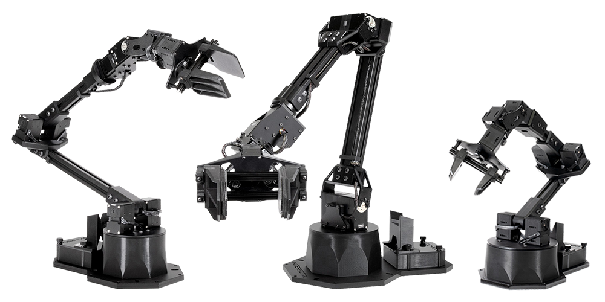
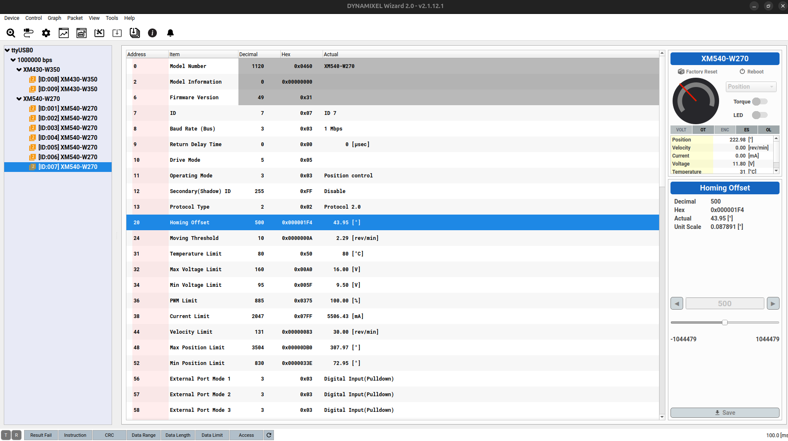
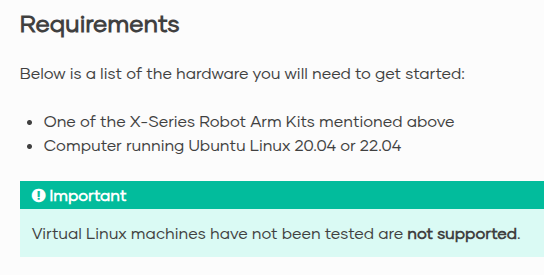
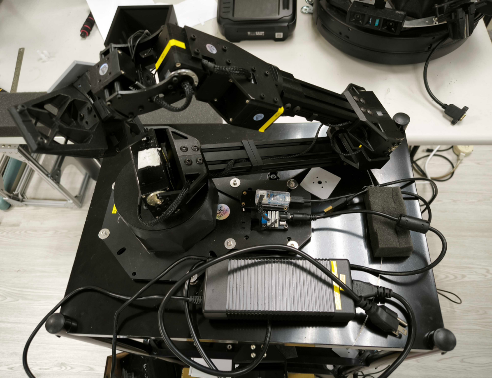

Interbotix ViperX300s¶

1. Setup¶
此章節可跳過，須校正馬達時在來參考本篇即可。
1-1. Motors¶
- 底座的 U2D2 是 Dynamixel 客製化的 USB 介面轉換器，只負責通訊，不含電力。
-
所使用的馬達皆為 Dynamixel，須要用 Dynamxiel Wizard 2.0 調整參數。 
-
沒外部供電或供錯電，馬達就無法被 Dynamixel Wizard 識別。
- 馬達能被 Dynamxiel Wizard 識別後才能開始對接 ROS2。
1-2. Motor Recovery¶
Documentation: How To: Firmware Recover DYNAMIXEL Using U2D2
如果 Dynamixel Wizard 無論如何都偵測不到馬達，有可能是馬達出廠後還沒做 recovery。
注意事項：
- 理論上 recovery 只須要做一次，後續都能被識別。
- recover 時必須單獨燒錄馬達， 不可串連。
- 在 recover 階段須要配置好每個馬達的 ID，若串連的馬達有相同 ID，其中一者會被忽略。
實驗室剛收到手臂時發現此問題，只好拆解整隻手臂，斷開馬達電路，個別燒錄。
1-3. Docker Image¶
Documentation:
ROS 2 Standard Software Setup — Interbotix X-Series Arms Documentation
根據官網，目前還不支援使用 Docker。

因此以下階段皆使用實驗室包的 Docker 做開發，環境詳情請參考interbotix_viperX300s。
2. Test & Calibration¶
此章節可跳過，須校正馬達時在來參考本篇即可。
Documentation:
Arm Control — Interbotix X-Series Arms Documentation
2-1. ROS2 API Testing¶
注意 Dynamixel Wizard 和 ROS2 Node 都會使用到 USB Port，同時間只能擇一。
使用 ROS2 前記得先在 Dynamixel Wizard 中 Disconnect。
-
實體的 ViperX 連線時，運行此命令會鎖定手臂，並呈現姿態於 RViz 中。
- 務必先確認 RViz 中的姿態是否和現實中一樣，有異則須手動校正。
- 在 RViz 中的 Robot Namespace 輸入
vx300s，Group Name 選擇Arm。
可以控制是否開啟torque以及切換姿態模式sleep_position或home_position。
2-2. Calibration Guide¶
如果手臂在 RViz 和現實中姿態不一樣，須對馬達參數做校正。
校正
由於官方和社群都沒找到校正邏輯，目前只能依照個人經驗，歸納一下 Calibration 的心得。
注意這裡要校正的是 Dynamixel 馬達參數和 Rviz 座標的關係校正。
要交叉比對三個地方：
| 工具/檔案 | 作用說明 | 需調整項目 |
|---|---|---|
| Dynamixel Wizard 2.0 | 調整馬達參數 | homing_offset |
interbotix_xsarm_control/config/vx300s.yaml |
設定 ROS2 控制參數 | Drive_Mode |
| RViz | 觀察現實與模擬姿態是否一致 | — |
有 calibrate:true 馬達不用手動校正
注意到 yaml 中有這段，從屬馬達會被程式校正到和主動馬達同個角度。
校正角度會被丟到 EEPROM，能斷電記憶參數。所以不需要校正它們。
ros2 yaml 覆蓋與編譯
yaml 下方 motors 的定義，會覆寫原先在 Dynamixel Wizard 上面的設定。
另外 yaml 更改後，須要做編譯 colcon build --cmake-clean-cache。
流程（依照 ID 順序重複此步驟， 直至所有馬達校正完成）：
- 開 ROS2 Node，記住 RViz 和實體的角度差。
- 取消 Torque，手動旋轉馬達，觀察旋轉方向是否一致。
- 若一致：跳到下一步。
若不一致： 將 .yaml的 Drive_Mode 改為0或1(正反方向)，改完重回第一步。
（shoulder_shadow和elbow_shadow若須改則要一同改。） - 如果角度差：
- 小於 90 度
- 關閉 ROS2 Node，連接 Dynamixel Wizard 2.0。
- 調整
homing_offset並 save 。單位換算：1 degree ~ 11.37778。 - Dynamixel Wizard 中 Disconnect，開啟 ROS2 Node 看 RViz。
- 如此反覆，調整
homing_offset正負和大小直到滿意。
- 大於 90 度
- 根據 Dynamixel X - C2.4.10. Homing Offset(20)，
因為 ROS2 會設置
Operateing Mode皆為Position Control（ 不在yaml裡 ），所以homing_offset只能在正負 90 度之間調整。 - 拆卸機構和馬達，保持上電的情況下，手動旋轉馬達舵機盤 90~180 度。
- 鎖緊機構後再回到第一步。
- 根據 Dynamixel X - C2.4.10. Homing Offset(20)，
因為 ROS2 會設置
- 小於 90 度
3. Hardware¶
3-1. Power¶
如下圖所示，ViperX 有一個 USB 轉接頭 (U2D2)，須連接到電腦上通訊。
另一個則為馬達直流供應電源，須連接到官方提供的降壓器(就是下方很肥的那個)。

Warning
由於手臂本身沒有保護功能，運行中斷電或通訊失效，整台手臂會直接砸下來。
手臂還蠻重的，請在操作它前預留工作空間，和一些緩衝措施(如加海綿塊)。
4. Software¶
由於 Stretch3 使用者多，每人開發習慣不同，也使用不同 repo。
以下開啟方式為 @pomelo925 維護，如果須特定功能請找相關的開發者哦。
Repository: https://github.com/hrc-pme/interbotix_viperX300s.git
開啟步驟：
- 將 ViperX300S USB 連線至自己的電腦上。
- 找空的資料夾路徑(如
/home/hrc/myname/)，下載此 repo。
- (僅首次或更改代碼時須) 編譯 ROS2 Workspace。
此腳本自動建立容器並進行編譯，結束時會自動關閉。
建構完的檔案應同步 mount 於本地檔案中。 -
運行腳本啟動服務。
不同的功能已經被封裝成獨立的容器，其中：
- raw: 進入開發環境，不執行任何程式。
- build: 編譯環境。
- rviz-ee: 使用 RViz2 界面控制 ViperX300s end effector。